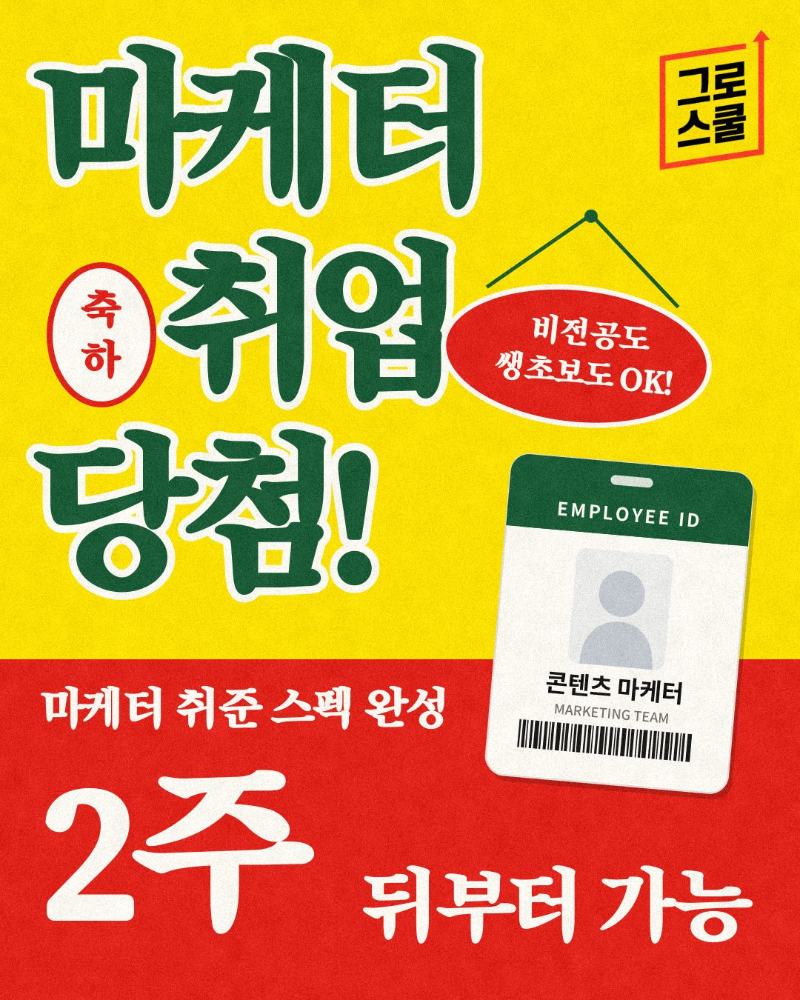
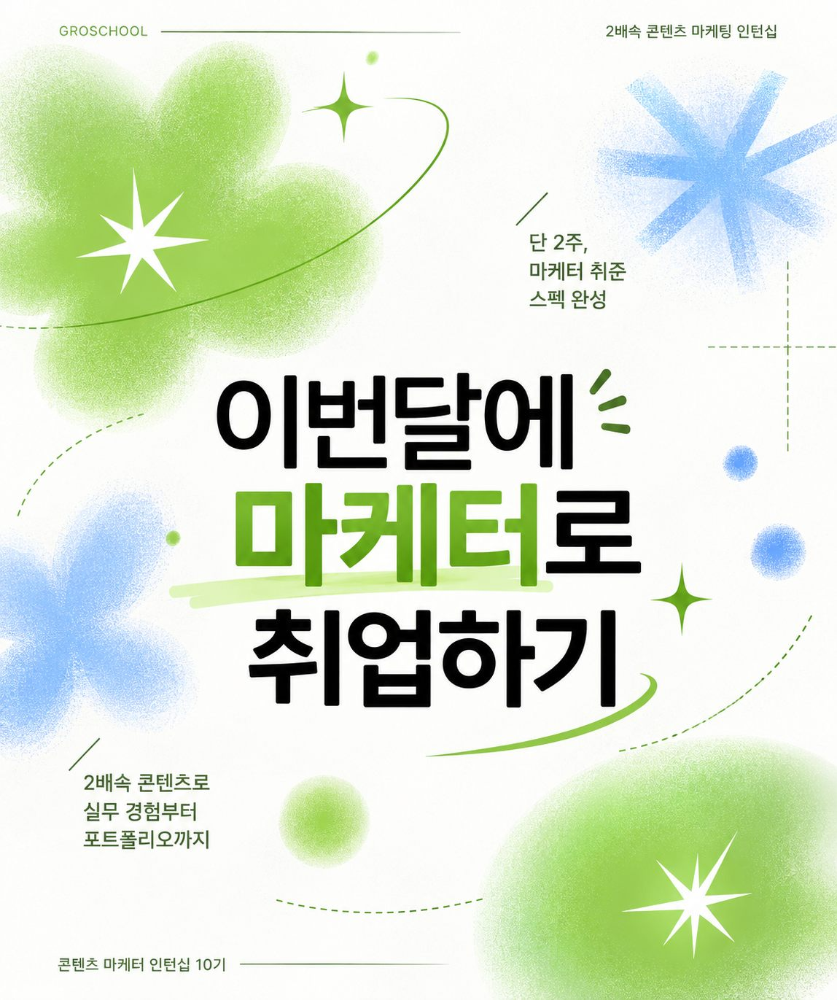
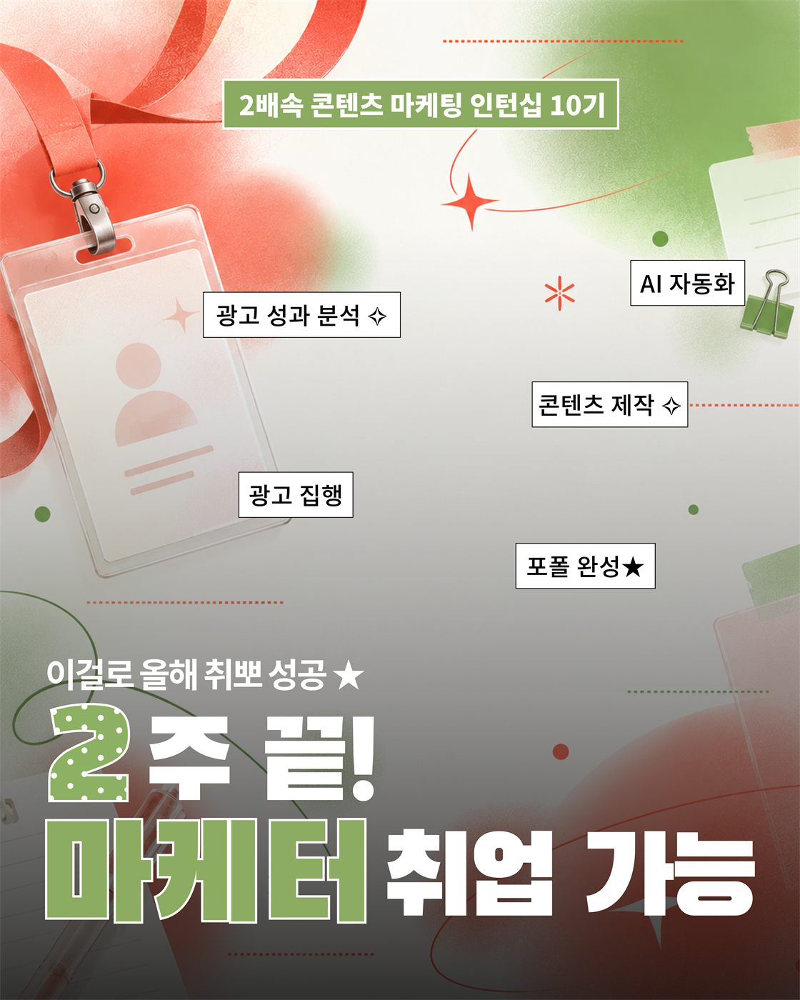
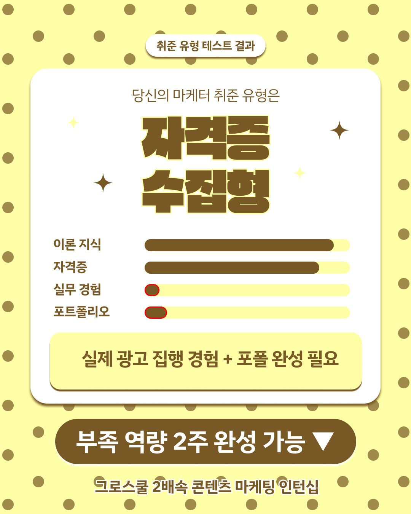

기획안을 넣으면
5분 만에 카드뉴스가 나와요
Drop in a brief,
get card news in five minutes
그로스쿨 2배속 콘텐츠 마케팅 인턴십 9기에 참여해, 차기 10기 수강생 모집을 위한 Meta 광고 소재 5종을 직접 기획·제작하고 집행했어요. 생성형 AI를 활용한 콘텐츠 제작 자동화와 광고 성과 분석을 수행하며, 클릭률뿐 아니라 노출 비용과 전환 데이터를 함께 살펴봤어요. As a participant in the 9th Growschool Content Marketing Internship, I planned, created, and ran five Meta ad creatives to promote recruitment for the 10th cohort. I also automated content production using generative AI and analyzed ad performance across CTR, CPM, and conversion-related metrics.
- 기간When
- 2026.10
- 담당Role
- 10기 모집 Meta 광고 기획·제작·집행 · 데이터 분석10th-cohort Meta ads: planning, creative, running · Data analysis
- 형태Type
- 인턴십 9기 이수9th-cohort internship (completed)
- 툴Tools
- Claude · Figma · Canva · Meta Ads
Highlights핵심 결과Highlights
3.80%
대표 소재 04 CTR
캠페인 평균 3.42%Lead creative 04 CTR
campaign avg. 3.42%
5종 ads
10기 모집 Meta 광고 소재
직접 기획·제작·집행Meta ad creatives for the 10th cohort
planned, made & run by me
87%
정보형 카드뉴스 반응 중
저장·공유 비중 (저장 192 · 공유 105)Share of reactions to info card news
that were saves & shares (192 · 105)
약 ~5분min
기획안 → 카드뉴스 완성
기존 수작업 약 2시간Brief → finished card news
vs. about 2 hours by hand
Process진행 과정How I did it
-
카드뉴스 제작 자동화Automating card-news production
- Claude×Figma·Canva를 연동해, 기획안을 넣으면 약 5분 안에 인스타그램 카드뉴스가 완성되는 제작 과정을 만들었어요.Connected Claude×Figma·Canva so that a written brief becomes a finished Instagram card-news set in about five minutes.
-
매거진 계정 운영Running a magazine account
- 자동화로 줄인 시간을 타깃 분석과 콘텐츠 기획에 쓰며 인스타그램 매거진 계정을 운영했어요.Used the time saved for audience research and content planning while running an Instagram magazine account.
-
생성형 AI 소재로 Meta 광고 집행Running Meta ads with AI creatives
- 10기 수강생 모집을 위한 Meta 광고 소재 5종을 생성형 AI로 기획·제작하고 직접 집행했어요.Planned and produced five Meta ad creatives with generative AI to recruit the 10th cohort, and ran the campaign myself.
-
성과 데이터로 소재 개선Improving creatives with data
- 노출 수, CTR, CPM 등 성과 데이터를 보고 피드백을 반영해 소재별 반응 원인을 분석했어요.Reviewed impressions, CTR and CPM, applied feedback, and analyzed why each creative performed the way it did.
Ad performance광고 성과 분석Ad performance analysis
-
Meta 광고 · 10기 모집 소재 5종Meta ads · 5 creatives for 10th-cohort recruitment

01 복고풍Retro 
02 질문형Question 
03 타이포형Typography 
04 실무 강조형Hands-on 
05 테스트형Quiz - 가설Hypothesis
- 후킹 요소가 다른 소재 5종 중 어떤 메시지가 클릭을 만드는지 확인Find out which message drives clicks among five creatives with different hooks
- 결과Result
- 전체 노출 2,253 · 링크 클릭 75 · 광고비 14,920원 · 랜딩 페이지 조회 61회2,253 impressions · 75 link clicks · ₩14,920 spend · 61 landing-page views
- CTR 3.33%(캠페인 평균 3.42%) · CPC 199원(평균 99원) · CPM 6,622원(평균 3,370원)CTR 3.33% (campaign avg. 3.42%) · CPC ₩199 (avg. ₩99) · CPM ₩6,622 (avg. ₩3,370)
- 소재별By creative
소재Creative 노출Impr. 클릭Clicks CTR CPC 01 복고풍Retro 11 0 0% – 02 질문형Question 0 0 – – 03 타이포형Typography 196 1 0.51% 1,803원₩1,803 04 실무 강조형Hands-on 1,923 73 3.80% 168원₩168 05 테스트형Quiz 123 1 0.81% 763원₩763 - 성과 분석Analysis
- 대표 소재 04는 교육 기간인 ‘2주’와 주요 실무 경험을 구체적으로 제시해 CTR 3.80%를 기록했어요. 캠페인 평균 3.42%보다 높은 수치예요.Lead creative 04 spelled out the two-week program length and the hands-on experience, reaching a 3.80% CTR — above the 3.42% campaign average.
- 그러나 CPM은 6,386원으로 캠페인 평균 3,370원의 약 1.9배였고, 이에 따라 클릭당 비용도 168원으로 평균 99원보다 높았어요.But its CPM was ₩6,386, about 1.9× the ₩3,370 campaign average, so its cost per click (₩168) was also above the ₩99 average.
- 높은 CPM은 타깃 경쟁, 게재 환경, 입찰 조건 등 여러 요인의 영향을 받았을 가능성이 있지만, 현재 데이터만으로는 원인을 확정할 수 없어요.The high CPM may reflect audience competition, placement or bidding conditions, among other factors — the current data can’t pin down the cause.
- 총 광고비의 82%가 소재 04에 집중되면서 나머지 소재는 충분한 노출을 확보하지 못했어요. 특히 질문형 소재 02는 노출되지 않아 메시지 효과를 평가할 수 없었어요.82% of total spend went to creative 04, so the others never got enough impressions. Question-style creative 02 wasn’t served at all, so its message couldn’t be evaluated.
- 다음 실험Next test
- 동일한 집행 조건과 충분한 노출을 확보해 소재별 반응을 비교하고, 타깃 조건을 변경해 CPM 개선 가능성을 검증하려 해요.Secure equal delivery conditions and enough impressions to compare each creative, and change targeting to test whether CPM can improve.
-
인스타그램 정보형 카드뉴스Instagram info card news
- 결과Result
- 반응의 87.1%가 저장·공유(저장 192 · 공유 105)87.1% of reactions were saves & shares (192 saves · 105 shares)
- 프로필 방문 15회(방문당 약 212원), 18~34세 노출 60%15 profile visits (about ₩212 per visit); 60% of impressions were ages 18–34
- 진단Diagnosis
- 광고로 인한 팔로우 0명 → 마지막 장에만 둔 CTA가 전환 병목Zero follows from the ad → a CTA only on the last slide was the conversion bottleneck
- 다음 테스트Next test
- 중간 장 CTA·후속편 예고 추가, 릴스 초반 3초 후킹으로 시청 지속 개선Add mid-carousel CTAs and a teaser for the next post; use a 3-second hook in Reels to improve watch time
-
인턴십 홍보 블로그Internship promo blog
- 결과Result
- 세션 47회로 수강생 18명 중 유입 1위, 참여율 97.9%, 구매 전환 1건(109,000원)47 sessions — #1 in traffic among 18 participants, 97.9% engagement rate, 1 purchase (₩109,000)
- 진단Diagnosis
- 제목과 랜딩 흐름이 맞아 체류와 전환이 함께 나옴The title matched the landing flow, so time-on-page and conversion came together
- 다음 적용Next step
- 이 글의 구조를 다음 글의 표준 템플릿으로 사용Use this post’s structure as the standard template for the next ones
Work작업물The work
Takeaway배운 점Takeaway
자동화의 목적은 ‘빨리 만드는 것’이 아니라 ‘생각할 시간을 버는 것’이라는 걸 배웠어요. 제작 시간을 줄인 만큼 타깃과 데이터를 더 깊게 볼 수 있었어요. Automation isn’t about making things faster — it’s about buying time to think. Every minute saved on production went into understanding the audience and the data.